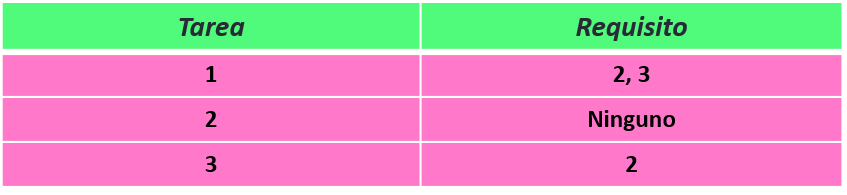

El Orden Topológico de una Gráfica Acíclica Dirigida ($DAG$) es un ordenamiento lineal de sus vértices de tal forma que el vértice $u$ va antes que vértice $v$ si la arista $u \rightarrow v$ existe en el $DAG$.
Un $DAG$ tiene al menos uno y posiblemente más Ordenamientos Topológicos.
$1/6$
Una forma simple de pensar en el Ordenamiento topológico es con el siguiente problema:
En una fábrica existen $n$ diferentes tareas que se tienen que llevar a cabo, sin embargo, hay algunas tareas que necesitan que se completen otras tareas antes de poder llevarlas a cabo. De igual manera, el jefe de la empresa prefiere que se lleven a cabo las tareas más importantes primero (la tarea $i$ es más importante que la tarea $j$ si $i > j$). Si se conocen los requisitos para cada tarea, da algún orden en el que se pueden llevar a cabo las $n$ tareas respetando dichos requisitos y la preferencia del jefe.
$2/6$
Si modelamos las tareas como un $DAG$, establecemos que existe la arista $u \rightarrow v$ si $u$ es requisito de $v$.
De esta manera queda claro que el orden solicitado es el orden topológico del $DAG$ generado.
$3/6$
Hay varias formas de obtener el Orden Topológico de un $DAG$, pero el algoritmo que visualizamos en esta herramienta es el algoritmo de Kahn. Este algoritmo se basa en el grado de entrada de cada vértice (cuantas aristas apuntan al nodo), cuyo equivalente en el problema que planteamos sería la cantidad de requisitos de cada tarea.
Empezamos con los vértices cuyo grado de entrada es $0$ (o aquellas tareas que no tienen requisitos) y los insertamos a alguna estructura de datos. Mientras nuestra estructura de datos no esté vacía, removeremos alguno de ellos y quitaremos todos las aristas que salen de ese vértice (eliminaremos esa tarea de nuestra lista de requisitos).
$4/6$
La estructura de datos empleada puede variar dependiendo del problema. Como en este problema requerimos encontrar el orden topólogico que dé prioridad a las tareas con índice mayor, empleamos un heap (montículo), que nos ayuda a siempre procesar el vértice de mayor valor primero.
Cabe destacar que a la hora de hacer el Ordenamiento Topológico si el grafo dado no es un $DAG$, no se completará el proceso.
La complejidad del algoritmo varía según la estructura de datos que se emplee y de la forma de representar el $DAG$. Utilizando un heap tenemos una complejidad de $O((V+E)log(V))$, donde $V$ es la cantidad de vértices y $E$ la cantidad de aristas.
$5/6$
Para usar este visualizador, primero hay que modelar el grafo seleccionando los requisitos de cada tarea. Cuando estés listo, presiona "Iniciar" o pulsa la barra espaciadora.
Puedes ajustar el tiempo de delay con las flechas del teclado. Un tiempo de delay mayor significa una velocidad de visualización menor.
Si quieres volver a intentarlo, presiona el botón de "Resetear" o pulsa la tecla R.
Para probar con una entrada aleatoria presiona el botón "Aleatorio" o pulsa la tecla W. (Gracias a Luis Eduardo Robles por la sugerencia)
Para conocer más sobre este algoritmo, te recomiendo visitar este sitio. ¡Diviértete!
$6/6$